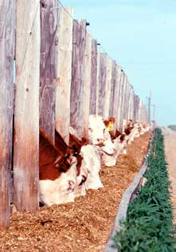

The first U.S. case of mad cow, also called BSE or bovinespongiform encephalopathy, was confirmed in December 2004 inWashington state, 15 years after Great Britain began destroying 3.7million cattle because of an epidemic of the disease.
Scientists think animals develop the always-fatal mad cow, whichcauses them to stagger, hence the name, by eating feed containingbrains, spinal cords or central nervous system tissues of otherinfected animals.
According to the USDA, the risk of humans contracting the diseaseby eating U.S. beef is extremely low, but consumer groups say theagency is not doing enough to protect the public.
To read more about this ongoing issue, go to theOrganicConsumers Association, theCenter for Science in the PublicInterest or GlobalResource Action Center for the Environment (GRACE).
|
 Feedlot production of beef relies on many practices that grass-fed beef producers reject. |
|
|